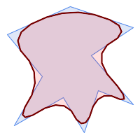
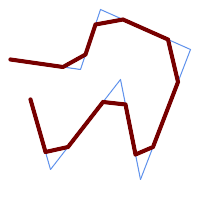
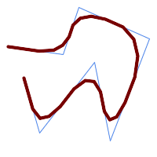

Name
ST_ChaikinSmoothing — チャイキンのアルゴリズムを使って、与えられたジオメトリの平滑化されたものを返します。
Synopsis
geometry ST_ChaikinSmoothing(geometry geom, integer nIterations = 1, boolean preserveEndPoints = false);
説明
チャイキンのアルゴリズムを使ってラインまたはポリゴンのジオメトリの平滑化を行います。平滑化の度合いはnIterationsパラメータで制御します。繰り返しごとに、各々の内部の頂点は、頂点を挟む辺の上で、長さが1/4となる位置の二つの頂点に置き換えます。平滑化の合理的な度合いは3回反復です。最大値は5に制限されています。
preserveEndPointsがTRUEの場合には、ポリゴンの環の終端が平滑化されません。ラインストリングの終端は常に保存されます。
![[Note]](../images/note.png) | |
頂点数は繰り返し回数の2倍です。結果ジオメトリは入力ジオメトリより多くのポイントを含むことになります。ポイント数を減らすには、結果に対して単純化関数を実行します (ST_Simplify, ST_SimplifyPreserveTopology, ST_SimplifyVWを参照して下さい)。 |
結果には、Z値とM値が存在する場合には、これらの補間値が入ります。
 この関数は3次元に対応し、Z値を削除しません。
この関数は3次元に対応し、Z値を削除しません。
Availability: 2.5.0
例
三角形の平滑化:
SELECT ST_AsText(ST_ChaikinSmoothing(geom)) smoothed
FROM (SELECT 'POLYGON((0 0, 8 8, 0 16, 0 0))'::geometry geom) AS foo;
smoothed
───────────────────────────────────────────
POLYGON((2 2,6 6,6 10,2 14,0 12,0 4,2 2))
1, 2, 3反復を使ったポリゴンの平滑化:
nIterations = 1 |  nIterations = 2 | nIterations = 3 |
SELECT ST_ChaikinSmoothing(
'POLYGON ((20 20, 60 90, 10 150, 100 190, 190 160, 130 120, 190 50, 140 70, 120 10, 90 60, 20 20))',
generate_series(1, 3) );
1, 2, 3反復を使ったラインストリングの平滑化:
 nIterations = 1 |  nIterations = 2 | nIterations = 3 |
SELECT ST_ChaikinSmoothing(
'LINESTRING (10 140, 80 130, 100 190, 190 150, 140 20, 120 120, 50 30, 30 100)',
generate_series(1, 3) );